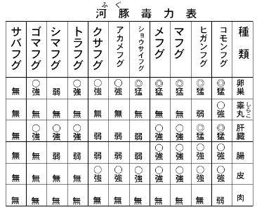

ふぐの
美味さというものは実に断然たるものだ――と、私はいい切る。これを他に比せんとしても、これに
優る何物をも発見し得ないからだ。
ふぐの美味さというものは、
明石だいが美味いの、ビフテキが美味いのという問題とは、てんで問題がちがう。調子の高いなまこやこのわたをもってきても
駄目だ。すっぽんはどうだといってみても問題がちがう。フランスの
鵞鳥の
肝だろうが、
蝸牛だろうが、比較にならない。もとよりてんぷら、うなぎ、すしなど問題ではない。
無理かも知れぬが、試みに画家に例えるならば、
栖鳳や
大観の美味さではない。
靫彦、
古径でもない。
芳崖、
雅邦でもない。
崋山、
竹田、
木米でもない。
呉春あるいは
応挙か。ノー。しからば
大雅か
蕪村か
玉堂か。まだまだ。では
光琳か
宗達か。なかなか。では
元信ではどうだ、
又兵衛ではどうだ。まだまだ。
光悦か
三阿弥か、それとも
雪舟か。もっともっと。
因陀羅か
梁楷か。
大分近づいたが、さらにさらに進むべきだ。
然らば
白鳳か
天平か
推古か。それそれ、すなわち推古だ。推古仏。法隆寺の壁画。それでよい。ふぐの味を絵画彫刻でいうならば、まさにその
辺だ。
しかし、絵をにわかに解することは、ちょっと容易ではないが、ふぐのほうはたべものだけに、また、わずかな金で得られるだけに、三、四度もつづけて食うと、ようやく親しみを覚えてくる。そして後を引いてくる。ふぐを食わずにはいられなくなる。この点は酒、タバコに似ている。
ひとたびふぐを前にしては、明石だいの
刺身も、おこぜのちりも
変哲もないことになってしまい、食指が動かない。ここに至って、ふぐの味の断然たるものが自覚されてくる。しかも、ふぐの味は、山におけるわらびのようで、その美味さは表現し
難い、というふぐにも、もちろん美味い
不味いがいろいろあるが、私のいっているのは、いわゆる
下関のふぐの上等品のことである。いやふぐそのものである。
ふぐ汁や鯛もあるのに無分別
ふぐでなくても、無知な人間は無知のために、なにかで
斃れる失態は、たくさんの例がある。無知と
半可通に与えられた宿命だ。
それでなくても、誰だってなにかで死ぬんだ。好きな道を歩んで死ぬ、それでいいじゃないか。好きでなかった道で斃れ、
逝くものは逝く。同じ死ぬにしても、ふぐを食って死ぬなんて恥ずかしい……てな賢明らしいことをいうものもあるが、そんなことはどうでもいい。
芭蕉という人、よほど常識的なところばかりを生命とする人らしい。彼の書、彼の句がそれを説明している。「
鯛もあるのに無分別」なんていうと、たいはふぐの代用品になれる資格があるかにも聞え、また、たいはふぐ以上に
美味いものであるかにも聞える。
所詮、たいはふぐの代用にはならない。句としては名句かも知れないが、ちょっとしたシャレに過ぎない。
小生などから見ると、芭蕉はふぐを知らずにふぐを語っているようだ。他の句は別として、この句はなんとしても不可解だ。たいである以上、いかなるたいであっても、ふぐに比さるべきものでないと私は断言する。ぜんぜんちがうのだ。ふぐの魅力、それは絶対的なもので、他の何物をもってしても及ぶところではない。ふぐの特質は、こんな一片のシャレで
葬り去られるものではなかろう。ふぐの味の特質は、もっともっと
吟味されるべきだと私は考える。
それだからといって、なんでもかでも、皆の者ども食えとはいわない。いやなものはいやでいい。ただ、ふぐを恐ろしがって口にせんような人は、それが大臣であっても、学者であっても、私の経験に
徴すると、その多くが
意気地なしで、インテリ風で、秀才型で、その実、気の
利いた人間でない場合が多い。そこが常識家の非常識であるともいえる。
死なんていうものは、もともと宿命的に決定されているものだ。いたずらに死に恐怖を感ずるのは、常識至らずして、未だ人生を悟らないからではないか。
さて、このふぐという
奴、猛毒魚だというので、人を撃ち、人を恐れ
戦かしめているが、それがためにふぐの存在は、古来広く鳴り響き、人の好奇心も動かされている。しかし、人間の知能の前には毒魚も征服されてしまった。
人間はふぐの有毒部分を取り除き、天下の美味を誇る部分をのみ、
危惧なく舌に運ぶことを発見したのだ。東京を一例に挙げてみても、今やふぐは味覚の王者として君臨し、群魚の美味など、ものの数でなからしめた。ためにふぐ料理専門の料理店は
頓に増加し、社用族によって占領されている形である。関西ならば、サラリーマンも常連も軒先で楽しみ得るが、東京はお手軽にいかない
怨みがある。
下関から運ばれるふぐは、東京における最高位の魚価をもっている。
この価格も一流料理屋では、もとより問題ではない。のれんを誇った料理の
老舗も、「ふぐは扱いません」などとはいっておられず、我も我もとふぐ料理の看板を上げつつあるのが、きょうこのごろの料理屋風景である。しかし、私はこの実情を
憂うるものではない。
否、むしろ推奨したいひとりである。
従来は、無知なるが
故に恐れ、無知なるが故に恵まれず、無知なるが故に
斃れ、不見識にもこの毒魚を征服する道を知らず、この海産、日本周辺に充満する天下の美味を
顧みなかったのである。今もって無知なる当局の取締方針など、このまま無責任に放置せず、あり余るこの魚族を有毒との理由から、むやみと放棄し
来った過去の
無定見を反省し、さらにさらに研究して、ふぐの存在を充分有意義ならしめたいと私は望んでいる。
ふぐは果して毒魚だろうか。中毒する恐れがあるかないか。ふぐを料理し、好んで食った私の経験からすると、ふぐには決して中毒しないといいたい。
今を去る十五、六年前かと思うが、確か「大阪毎日新聞」に次のような有益な記事が掲載されていた。それを切り抜いて、ご紹介する。九州帝大医学部福田得志博士が中心になり、過去七年間、この問題を検討した結果である。
以下は同博士の話。
「私は過去七年間、
河豚毒の問題を再検討して、次の毒力表を得た。
表中猛とあるのは、猛毒で十グラムまでは致死的ならず、弱は弱毒で百グラムまでは致死的でなく、無は千グラムまでは致死的でないことを意味する。この毒力は一つの種類の河豚数十尾を検した中の最強の毒力です」

河豚毒力表
これによっても、ふぐの肉はいかなる種類のふぐでも無毒とされている。卵巣と肝臓、腸とを食わなければ無毒だといっている。私もその通りだと思う。要するに、猛毒といっても、肉にあるのではないから都合よくできていて、解明はすこぶる簡単だ。要は血液に遠ざかることである。わずかに
滲み出る血液くらいでは致死量に至らないようだ。むしろ
醍醐味となって、美味の働きをしているのかも知れない。いずれにしても、肉を
生身で食うのが一番
美味いのだから、
素人は皮だの腸だのは食わなくてもよい。しかし、頭肉、
口唇、雄魚の
白子は美味いから、ちりにして味わうべきだ。
下関で鮮度の高い
奴を
腸抜きにして、飛行便で送ってくるから、これなら
万まちがいないはずだ。
ふぐをこわがったのは昔のことだ。それは一にふぐ料理の方法が研究されていなかったからである。現在では、ふぐ屋においてふぐを食って死ぬことはない。このようにふぐを安心して食える時代が来ても、ふぐを恐ろしがることは、全く無知の致すところだと思う。
にもかかわらず、今なお衛生当局の無知は、ふぐ料理を有毒と決め、各県各区勝手な取締りをおこなっている。よしんば取締りを行うにしても、よろしく研究の上、この
天与の美味を生かすように配慮願いたいものである。